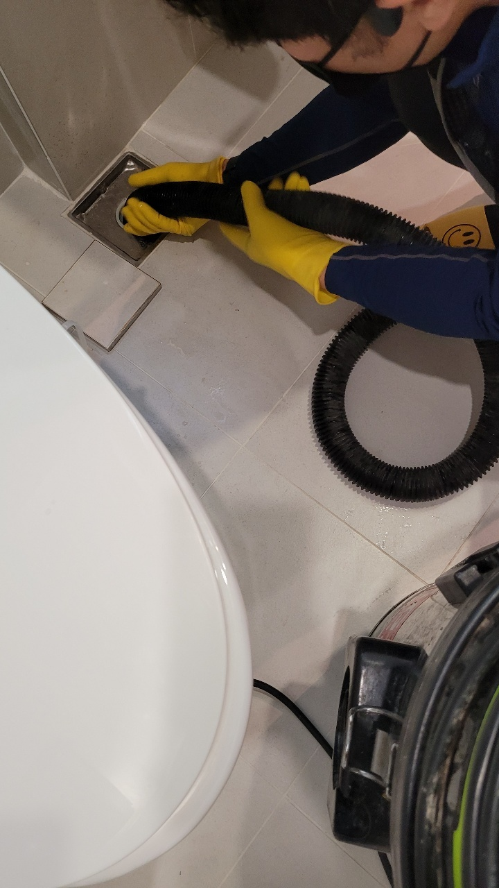

🏠 시흥시하수구막힘 배곧동 목감동 하수구역류해결 빠르게
시흥 싱크대막힘 전문 시공 후기

📋 작업 개요
- 위치: 시흥
- 서비스 유형: 싱크대막힘, 하수구막힘, 배관막힘, 역류해결, 뚫는업체
- 작업 일시: 2023. 3. 15. 9:19
- 업체명: 하수구수사대 (010-5615-2118)
🔍 문제 상황
안녕하세요 하수구수사대입니다.
우리가 매일 사용을 하고 있는 싱크대나 화장실 같은 경우는 배수가 원활하게 되어야 문제가 없다고 할 수 있습니다. 하지만 일상생활을 하다 보면 갑자기 하수구가 막히게 되는 현상이 발생을 할 수 있습니다. 이렇게 배관 문제가 발생을 하게 되면 여러 가지로 불편함을 겪게 되는데요.
특히 몇 번씩 배수구가 막히게 되는 경우에는 어떻게 해결을 해야 하는지에 관해서 혼란스러우실 수 있는데요. 그래서 급하게 해결을 하고자 하는 마음에 어떤 분들의 경우는 시중에 나와있는 뚫어뻥이나 셀프 약품들을 이용해서 여러 가지를 시도하는 분들이 많이 있습니다.
하지만 이렇게 섣부르게 해결을 하는 것은 오히려 배관의 문제를 해결하는 데 있어서 악영향만 줄 수 있기 때문입니다. 그러므로 배관 막힘이 발생을 하게 된 원인을 찾아서 전문가를 찾아서 해결을 해주는 것이 필요하다고 할 수 있습니다. 하수구 막힘은 누구에게나 일어날 수 있는 것인 만큼 현장의 후기를 통해서 배관 막힘 문제를 어떻게 해결을 하게 되었는지를 알려드리도록 하겠습니다.

🔎 원인 분석
💡 전문가 진단: 이번에 문의를 주신 현장은
이번에 문의를 주신 현장은
시흥시하수구막힘 배곧동 목감동 하수구역류해결 현장인데요. 어느 날 갑자기 화장실의 배관 막힘으로 인해서 급하게 연락을 주신 곳이었습니다. 의뢰를 받고 방문을 한 현장은 여러 세대가 함께 살고 있는 다세대 빌라였는데요.
고객님께서는 얼마 전부터 욕실의 배수구가 한 번씩 막히는 경우가 있었다고 합니다. 그때마다 임시방편으로 처음에는 셀프로 해결을 시도하기 위해서 여러 가지 도구들을 써서 그동안 지내왔다고 하셨는데요.
하지만 계속해서 한 번씩 막히게 되면서 상황이 점점 악화되어 가는 것 같았다고 했습니다. 그러다 어느 날 완전히 막히게 되면서 저희 전문 업체를 통해서 연락을 주신 것이었습니다. 저희 하수구수사대에서는 오랜 경력과 노하우를 가지고 있는 배관 전문 업체로 항상 현장의 의뢰를 받고 방문을 하기 전에는 현장의 상황을 설명을 듣고 방문을 해드리고 있습니다.

🔧 작업 과정
원인 파악을 하기 위해서 내시경 작업을 하고 있습니다.
이번에 방문한 현장인 시흥시하수구막힘 배곧동 목감동 하수구역류해결 현장에서도 가장 먼저 도착을 해서 확인을 한 것이 바로 내시경 작업이었습니다. 내시경을 통하면 배관 내부의 상황을 카메라로 확인을 할 수 있기 때문에 원인을 파악해서 거기에 맞는 해결 작업을 할 수 있는 것입니다.
하수구가 막히게 되는 원인에는 아주 다양한 부분들이 있는데요.
특히 욕실의 배수구가 막히게 되는 경우는 외부의 이물질이 들어가게 되거나 머리카락 등이 엉키게 되면서 막힘이 발생하게 되는 경우가 많이 있습니다. 그러므로 내부의 원인을 파악하기 위해서 가장 먼저 필요한 작업이 바로 내시경 작업이라고 할 수 있습니다.
내시경을 통해서 배수관의 내부 상태를 파악해 보았는데요. 배관 내부는 노후의 영향도 있지만 머리카락으로 엉키게 된 덩어리들이 자리 잡고 있는 것을 확인하였습니다. 이번 현장처럼 여러 세대가 동시에 배관을 사용하고 있는 곳은 배관 막힘이 더욱 자주 발생을 하게 될 수 있는데요. 본격적으로 작업을 진행을 하기 위해서 장비를 세팅하였습니다.
먼저 시흥시하수구막힘 배곧동 목감동 하수구역류해결을 위해서 위에까지 차올라있는 이물질들을 일부 제거를 하는 석션 작업을 실시하였습니다. 그런 후에 내부에 오랜 시간 동안 쌓인 이물질들을 떼어내는 작업을 시작하였는데요 이렇게 배관 벽의 이물질 덩어리들을 제거하기 위해서 그에 맞는 제거 작업을 하였습니다.


✅ 작업 완료
이물질들을 완전히 제거 후
작업을 완료하였습니다.




⚠️ 주방 싱크대 배관 막힘 예방 수칙
- ✅ 기름기가 묻은 식기나 프라이팬은 설거지 전 키친타올로 반드시 기름때를 닦아내세요.
- ✅ 주기적으로 싱크대 개수대에 뜨거운 물을 가득 받아 한 번에 내려 배관 내부 기름을 씻어내세요.
- ✅ 배수구 거름망을 미세한 필터로 사용하시고 음식물 찌꺼기가 틈으로 새어 들지 않게 관리하세요.
- ✅ 베이킹소다와 식초를 뜨거운 물과 함께 일주일에 한 번씩 부어주면 배관 살균과 막힘 예방에 좋습니다.
💡 핵심 정리
- 확실한 장비 작업(내시경 점검 및 샤프트 스케일링)으로 원인을 뿌리 뽑습니다.
- 작업 후 1년 이내에 동일한 부위 재발 시 100% 무상 A/S 서비스를 보장합니다.
- 서울 · 경기 · 인천 전 지역에 24시간 언제든 긴급 출동할 수 있도록 항시 대기 중입니다.
❓ 자주 묻는 질문 (FAQ)
🚨 시흥 싱크대막힘 문제로 고민이신가요?
정확한 원인 진단과 확실한 시공으로 재발 없는 해결을 약속드립니다.
24시간 긴급 출동 | 서울 · 경기 · 인천 전지역 | 1년 내 재발 시 무상 A/S